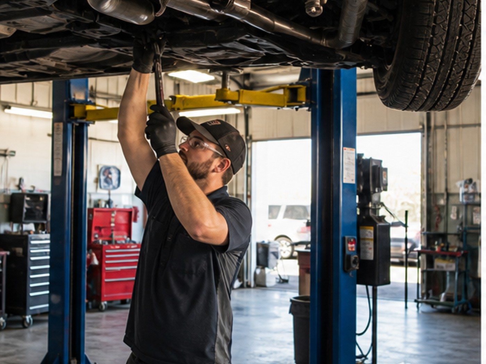
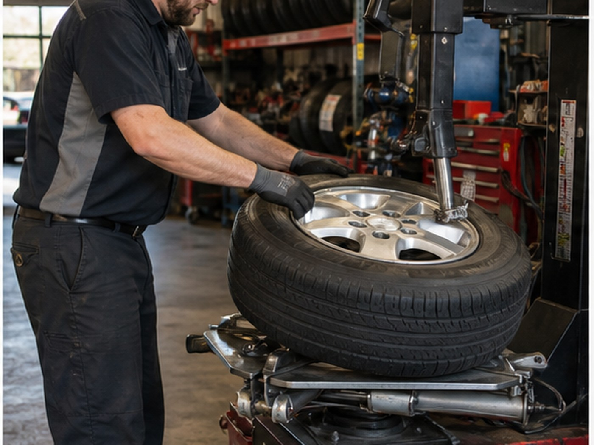
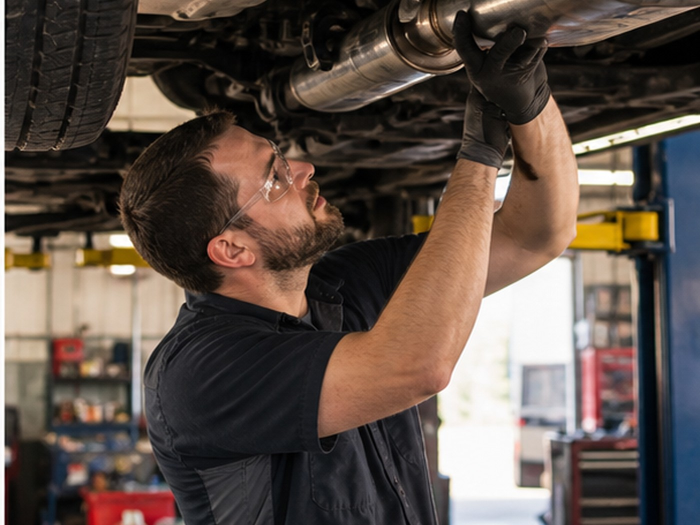

Ross Avenue auto repair
Auto care for Easley drivers who need clear next steps.
General repair, diagnostics, brake service, maintenance, oil service, and repair calls from a local Easley shop.
- 4.894 Google reviews
- Auto RepairEasley, SC
- FastTap-to-call scheduling

Services
Clear options for local customers.
- General repair
- Diagnostics
- Brake service
- Maintenance
- Oil service
- Repair calls

Local service
Repair information customers can act on quickly.
Superior Auto Care keeps the service path simple for customers who need diagnostics, maintenance, brake service, or a direct shop call.

Service path
Turn the repair need into the right call.
Diagnostic requests should capture symptoms, vehicle details, and whether the issue is safe to drive.
Local proof
Built around the trust customers already look for.
- 4.8-star Google rating
- 94 public reviews
- Ross Avenue location
Contact
Superior Auto Care
410 Ross Ave, Easley, SC